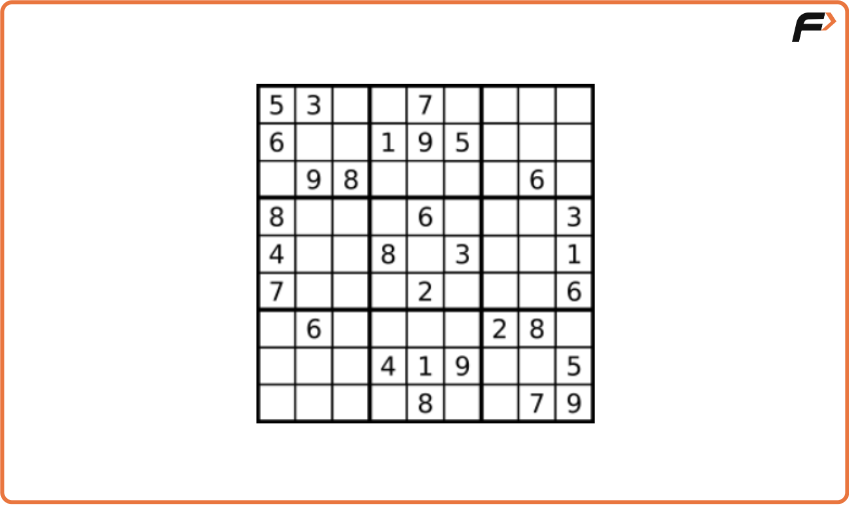
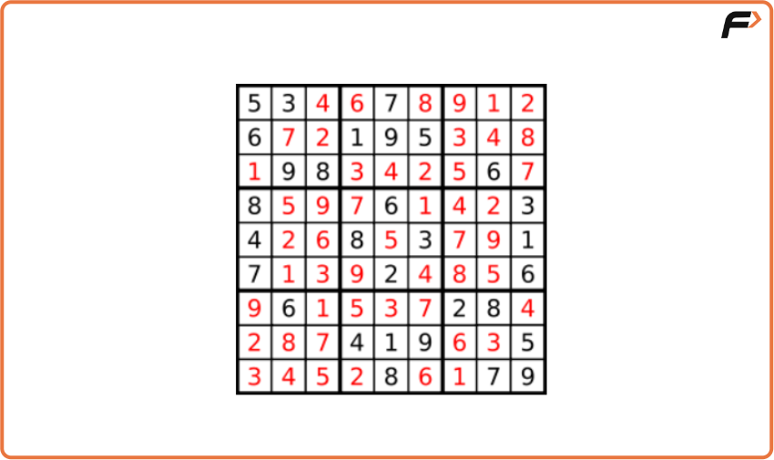
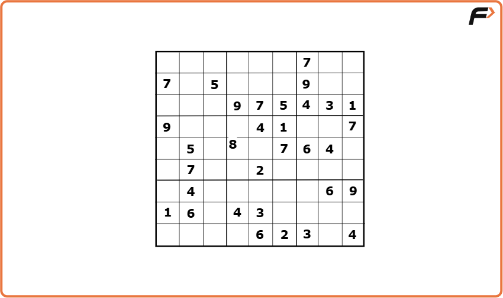
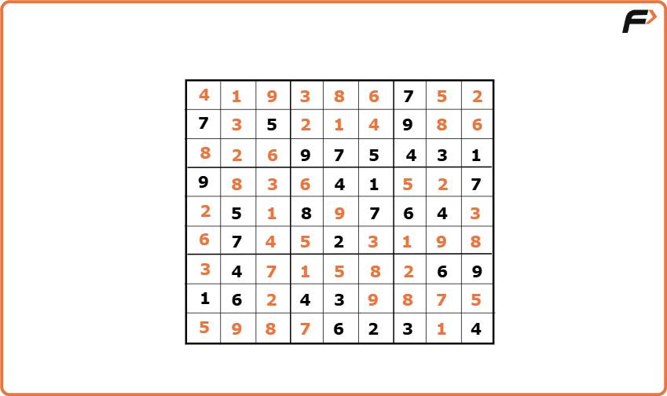
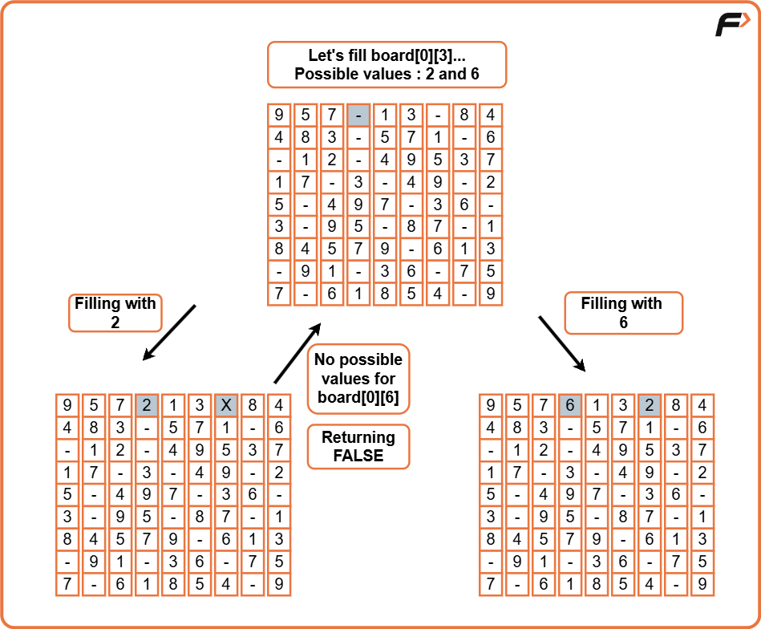
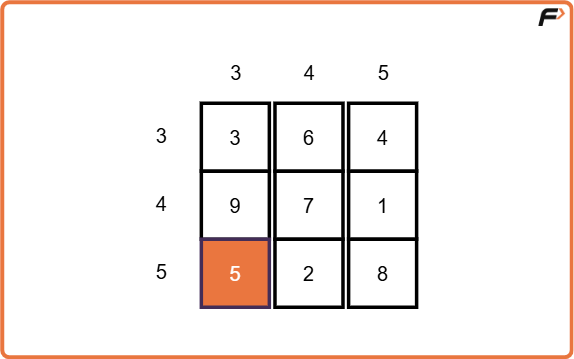

Sudoku Solver
Problem Statement: Create a program that fills in the blank cells in a Sudoku puzzle to solve it.
Every sudoku solution needs to follow to these guidelines:
1) In every row, the numbers 1 through 9 must appear exactly once.
2) In every column, the numbers 1 through 9 must appear exactly once.
3) In each of the grid's nine 3x3 sub-boxes, the numbers 1 through 9 must appear exactly once.
Empty cells are indicated by the '.' character. .
Examples
Input :

Output :
Explanation : The output is a valid Sudoku solution that fills in all empty cells such that each number 1 through 9 appears exactly once in every row, column, and 3x3 sub-box.
Input :
Output :
Explanation : The output is one of the possible valid Sudoku solutions that fills all empty cells following the Sudoku rules.
Disclaimer: Here is the practice link to help you assess your knowledge better. It's highly recommend trying to solve it before looking at the solution.
Approach
Algorithm
- Let’s see the step by step approach. Our main recursive function(solve()) is going to just do a plain matrix traversal of the sudoku board. When we find an empty cell, we pause and try to put all available numbers(1 - 9) in that particular empty cell.
- We need another loop to do that. But wait, we forgot one thing - the board has to satisfy all the conditions, right? So, for that we have another function(isValid()) which will check whether the number we have inserted into that empty cell will not violate any conditions.
- If it is violating, we try with the next number. If it is not, we call the same function recursively, but this time with the updated state of the board. Now, as usual it tries to fill the remaining cells in the board in the same way.
- Now we'll come to the returning values. If at any point we cannot insert any numbers from 1 - 9 in a particular cell, it means the current state of the board is wrong and we need to backtrack. An important point to follow is, we need to return false to let the parent function(which is called this function) know that we cannot fill this way. This will serve as a hint to that function, that it needs to try with the next possible number. Refer to the picture below.

- If a recursive call returns true, we can assume that we found one possible way of filling and we simply do an early return.
Validating Board
- Now, let's see how we are validating the sudoku board. After determining a number for a cell(at i'th row, j'th col), we try to check the validity. As we know, a valid sudoku needs to satisfy 3 conditions, we can use three loops. But we can do within a single loop itself. Let's try to understand that.
- We loop from 0 to 8 and check the values - board[i][col](1st condition) and board[row][i](2nd condition), whether the number is already included. For the 3rd condition - the expression (3 * (row / 3) + i / 3) evaluates to the row numbers of that 3x3 submatrix and the expression (3 * (col / 3) + i % 3) evaluates to the column numbers.
- For eg, if row= 5 and col= 3, the cells visited are
It covers all the cells in the sub-matrix

Code
#include <bits/stdc++.h>
using namespace std;
class Solution {
public:
// Function to check if placing character c at board[row][col] is valid
bool isValid(vector<vector<char>> &board, int row, int col, char c) {
// Check all rows in current column
for (int i = 0; i < 9; i++) {
// If character already exists in column, not valid
if (board[i][col] == c)
return false;
}
// Check all columns in current row
for (int j = 0; j < 9; j++) {
// If character already exists in row, not valid
if (board[row][j] == c)
return false;
}
// Calculate start indices of the 3x3 sub-box
int boxRowStart = 3 * (row / 3);
int boxColStart = 3 * (col / 3);
// Check the 3x3 sub-box for duplicate character
for (int i = 0; i < 3; i++) {
for (int j = 0; j < 3; j++) {
// If character found in sub-box, not valid
if (board[boxRowStart + i][boxColStart + j] == c)
return false;
}
}
// If all checks passed, placement is valid
return true;
}
// Recursive function to solve Sudoku using backtracking
bool solveSudoku(vector<vector<char>> &board) {
// Traverse each cell in the board
for (int i = 0; i < 9; i++) {
for (int j = 0; j < 9; j++) {
// If current cell is empty
if (board[i][j] == '.') {
// Try all possible digits
for (char c = '1'; c <= '9'; c++) {
// Check if placing c is valid here
if (isValid(board, i, j, c)) {
// Place c tentatively
board[i][j] = c;
// Recur to solve rest of the board
if (solveSudoku(board))
return true; // If successful, return true
// If not successful, backtrack
board[i][j] = '.';
}
}
// If no digit can be placed here, return false to backtrack
return false;
}
}
}
// If all cells are filled correctly, return true
return true;
}
};
int main() {
// Initialize the Sudoku board with given values and '.' for blanks
vector<vector<char>> board {
{'9', '5', '7', '.', '1', '3', '.', '8', '4'},
{'4', '8', '3', '.', '5', '7', '1', '.', '6'},
{'.', '1', '2', '.', '4', '9', '5', '3', '7'},
{'1', '7', '.', '3', '.', '4', '9', '.', '2'},
{'5', '.', '4', '9', '7', '.', '3', '6', '.'},
{'3', '.', '9', '5', '.', '8', '7', '.', '1'},
{'8', '4', '5', '7', '9', '.', '6', '1', '3'},
{'.', '9', '1', '.', '3', '6', '.', '7', '5'},
{'7', '.', '6', '1', '8', '5', '4', '.', '9'}
};
Solution sol;
sol.solveSudoku(board);
// Print the solved Sudoku board
for (int i = 0; i < 9; i++) {
for (int j = 0; j < 9; j++)
cout << board[i][j] << " ";
cout << "\n";
}
return 0;
}
Complexity Analysis
Time Complexity: O(9(n ^ 2)), in the worst case, for each cell in the n2 board, we have 9 possible numbers.
Space Complexity: O(1), since we are refilling the given board itself, there is no extra space required, so constant space complexity.